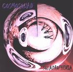

| Artist: | Cosmosquad |
| Title: | Squadrophenia |
| Label: | Mascot Records M 7066 2 |
| Length(s): | 54 minutes |
| Year(s) of release: | 2002 |
| Month of review: | [05/2002] |
| 1) | Creepy Spider | 5.36 |
| 2) | Jam For Jason | 8.05 |
| 3) | Road To Tanzania/Tribal Trance | 5.53 |
| 4) | Winter In Innisfail | 4.57 |
| 5) | In Loving Memory | 5.06 |
| 6) | Creepy Spider Part II | 4.36 |
| 7) | Sea Broth | 4.35 |
| 8) | Godzilla's Revenge | 0.54 |
| 9) | Cauldron Of Evil | 5.45 |
| 10) | Chinese Eyes | 4.17 |
| 11) | Tribal Trance (reprise) | 4.16 |
Road To Tanzania/Tribal Trance is a two parted track. The first part is for the most part moody jazzrock subtly recorded and relaxed. The production shows itself to be very clear here. The second part is percussion and soundscapes. With Winter In Innisfail we encounter some bouncier playing. Maybe a bit too straightforward at first, but later on the music gains in power and momentum with drums ánd percussion. The rhythmic side is in order, but melodically the music falls short.
In Loving Memory not surprisingly the music is not too happy or rocky. In fact, on this romantic track the music is quite sad with a sobbing guitar. Later the rock gains influence, but still not much.
Creepy Spider Part II is really quite nice with the drums coming on slowly and the overall claustrophobic feel to the guitar. The drums are varied on this one. The echoey Sea Broth features a Crimsonesque guitar but more in a jazzrock vein and always a bit distant. Godzilla's Revenge is only a short track with raw keyboards.
With Cauldron Of Evil the darkness creeps back into the music. Although the music is not that intense, the vocal samples, the harsh wah-wah guitar make it all not too pleasant for your ears, but in a pleasant way. Hendrix is the main influence on Chinese Eyes while Tribal Trance is reprised and at first vague, but later really swinging.